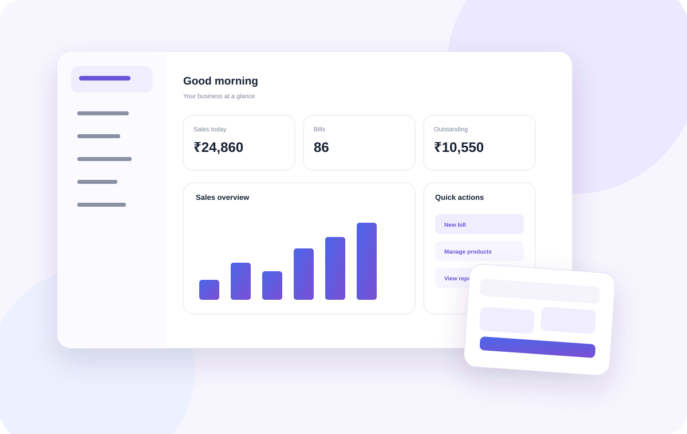

Run the business. Keep the software simple.
A practical POS for billing, products, inventory, purchases, customers and sales visibility — designed for the everyday pace of small businesses.
Your counter, stockroom and daily business picture — connected.
Puravigal POS keeps the important pieces of everyday selling together. When a sale happens, the information should move with it.

A POS should make the business easier to run — not become another job to manage.
That is the idea behind Puravigal POS. The product is being shaped around the rhythm of real small businesses: a customer walks in, a product gets sold, stock changes, a payment is collected, and the owner needs to know what happened.
At the counter
Keep billing focused, quick and easy for the person making the sale.
Behind the counter
Keep products, purchases, suppliers and stock connected to the transactions.
At the end of the day
Turn daily activity into information owners can actually use.
The workflows your business uses every day.
One focused product, with the depth needed to support the work around a sale.
Different businesses. One dependable POS foundation.
Puravigal POS is designed to start from the way a business actually works — whether you are billing products in a retail shop, serving customers in a café, or moving a wider catalogue in a supermarket.
One clear product. A better way to run the everyday.
Start free, explore the workflow and move to Standard when Puravigal POS becomes part of your daily business.